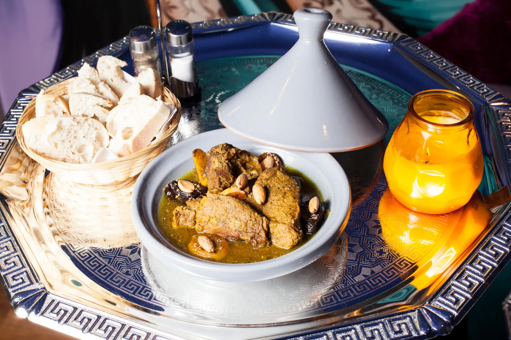
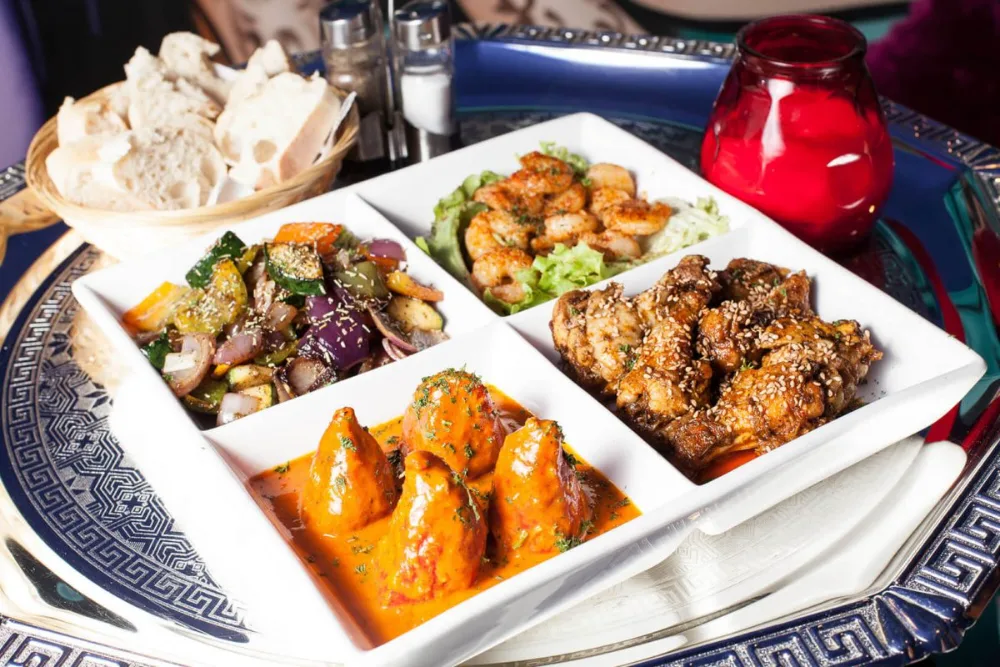
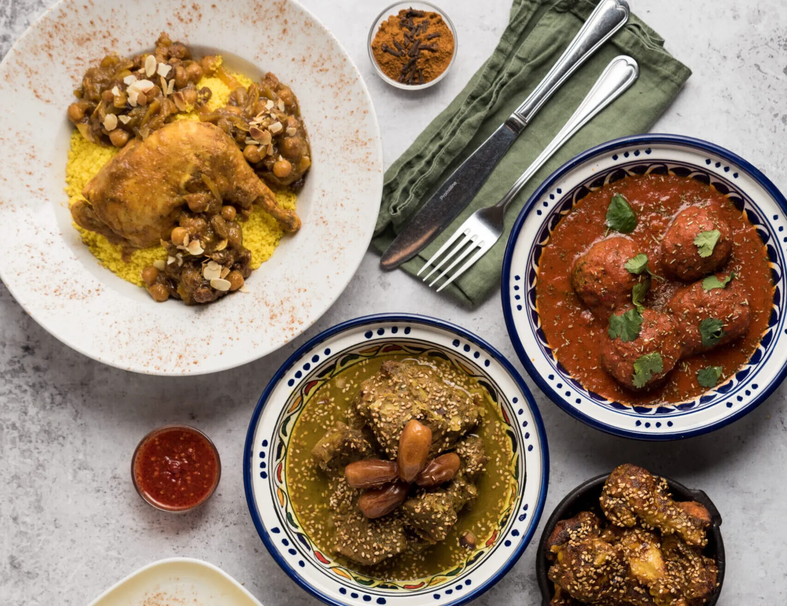
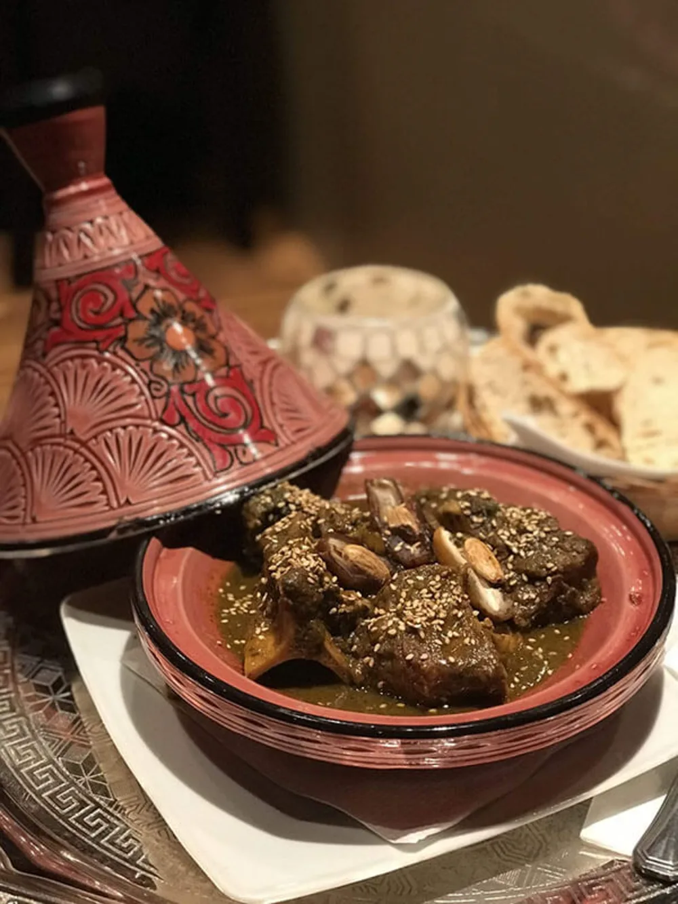
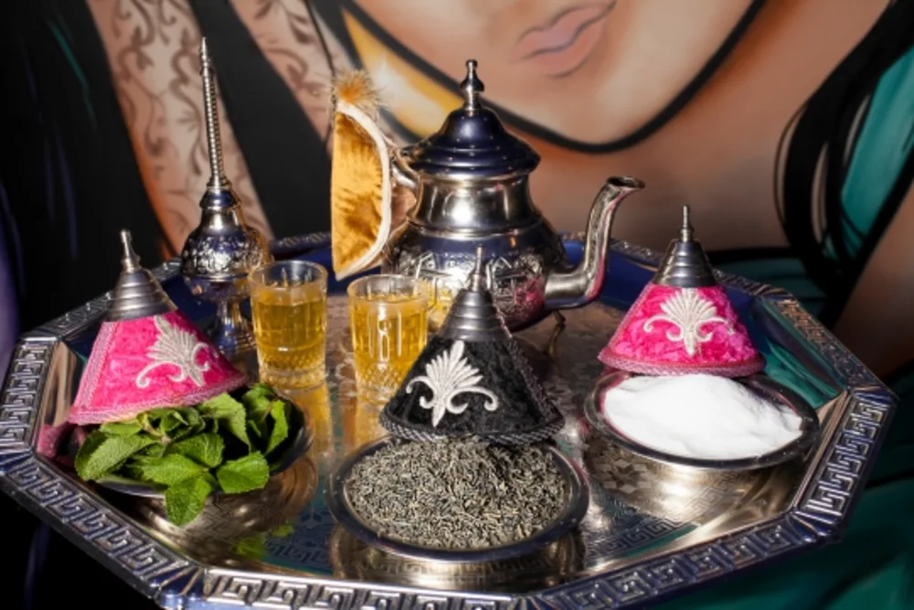

Optie A · Grill
Voorgerecht: mezzes-proeverij, 4 populaire voorgerechten op grote schalen.
Hoofdgerecht: vier soorten vlees van de grill (Ras Al Hanout-koteletten van kalf, kalfsgehakt, merguez en kipfilet) met gekruide frietjes en gemengde salade.
Marokkaans restaurant · Van Woustraat 89, Amsterdam
Authentieke Marokkaanse halal gerechten volgens grootmoeders recept. Tajines die uren sudderen, couscous op de traditionele manier en een tafel vol mezzes om te delen.
Dinsdag t/m zondag open vanaf 17:00

In 2012 raakten wij, twee jonge gozers uit Amsterdam, ontzettend geïnspireerd in Californië door de vele hippe en toegankelijke Marokkaanse restaurants. “Dit missen wij in Amsterdam!” riepen we. Zo geroepen, zo gedaan!
In 2013 werd MOZO geboren, waarbij wij alles combineerden waar we van houden uit het land waar onze ouders vandaan komen: het Magische Koninkrijk Marokko. Met een heleboel recepten van onze grootmoeders, volgeladen met verse kruiden en specerijen uit Marokko en een lading kleurrijke tajines begonnen wij aan dit avontuur.




Elke zaterdag en zondag van 14.00 tot 16.30 uur. Alleen op reservering, vanaf 4 personen.
35,- per persoon
Natuurlijk zijn ook grote(re) gezelschappen van harte welkom bij MOZO. Onze Marokkaanse Kamer is een ideale plek voor speciale gelegenheden, en voor een besloten diner beschikbaar vanaf 15 personen.
Groepsreserveringen zijn alleen mogelijk op dinsdag, woensdag, donderdag en zondag. Op vrijdag en zaterdag accepteren wij geen groepsreserveringen. Vanaf 9 personen geldt het groepsmenu.
Groepsmenu als PDF: Nederlands English
Reserveer online en ontvang direct een bevestiging. Bellen kan dinsdag tot en met zondag vanaf 17.00 uur. Let op: de voicemail wordt niet beluisterd. Mailen kan natuurlijk ook.
| Dinsdag | 17:00 – 22:00 |
|---|---|
| Woensdag | 17:00 – 22:00 |
| Donderdag | 17:00 – 22:00 |
| Vrijdag | 17:00 – 23:00 |
| Zaterdag | 17:00 – 23:00 |
| Zondag | 17:00 – 22:00 |
High tea: zaterdag en zondag 14.00 – 16.30 uur, op reservering.
Op dit moment hebben wij geen openstaande vacatures. Solliciteren kan via info@restaurantmozo.nl.